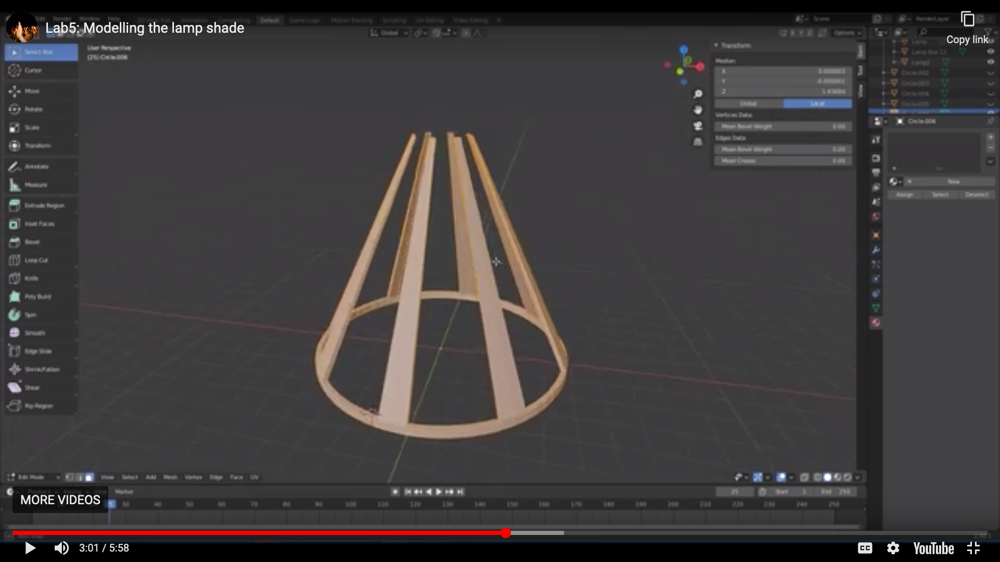
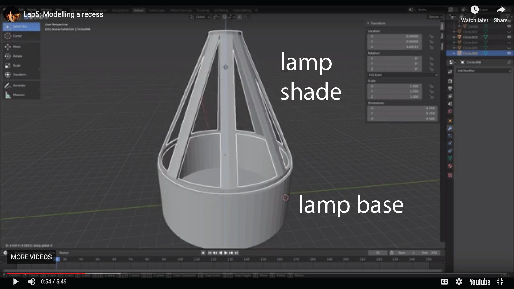
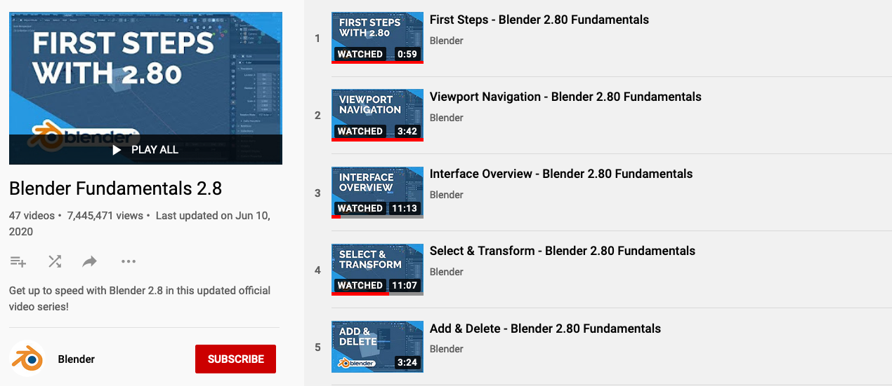

6.810 Engineering Interactive Technologies (fall 2021)
Lab 9: 3D Modelling the Lamp
In this lab, you will 3D model the lamp base and lamp shade and then 3D print both parts on a Prusa 3D printers. In the next labs, we will then make the lamp interactive by adding fabric to the lamp that includes touch buttons made from conductive yarn and LEDs to add color changing functionality to the lamp.


Steps:
- Install 3D Editor
- Watch 3D Modeling Getting Started Tutorials
- Short Cuts for 3D Modeling
- (next week) 3D Model the Lamp Base
- (next week) 3D Model the Lamp Shade
- (next week) Create Recess that Holds the Lamp Shade on the Base
- (next week) Export .stl File for Each 3D Model
Help us Improve Class Materials for Lab9:
Please let us know if you had any trouble with 3D modeling or if anything was confusing in the write up.
You can add your comments here.
(1) Install 3D Editor
For 3D modeling, we will use the 3D editor Blender, which is open source.
Blender is available for all major operating systems.
Install the latest version of Blender from here: https://www.blender.org/download/. If you are already familier with a different 3D editor (e.g. Rhino3D, Fusion 360), you can also use it but if you get stuck, we will not be able to help you.
(2) Watch 3D Modeling Getting Started Tutorials
If you are not familiar with Blender, we recommend you watch these getting started tutorials on youtube (number 1-15, each is 3-12 minutes, ca. 75 minutes total): Blender Tutorials.

(3) Short Cuts for 3D Modeling
Here is a summary of the short cuts which may come handy when you do your 3D modeling in the next steps:
Short cuts:
'a' = select all
'e' = extrude
's' = scale
'm' = merge
'7' = top view
'1' = side view
'g' + 'z' = grab and move in z
(next week) (4) 3D Model the Lamp Base
< Our lamp consists of two parts: the base of the lamp (the cylindrical shape that will house the electronics), and the shade of the lamp (the cone shape that will be covered with fabric).
We made video tutorials that guide you through the modelling. The video quality might be better if you click on the youtube icon in the lower left corner, which opens a new tab and you can set the quality to 1080p.
Creating the Lampbase Cylinder for Housing the Electronics (see video): Make a cylinder (vertices: 64, location: 0,0,0, radius: 5.0cm). Extrude to height 4.0cm. Create another cylinder (vertices: 64, location: 0,0,0.3, radius: 4.8cm). Use a Boolean Modifier on the first cylinder, and subtract the second cylinder from it by choosing Difference .
(next week) (5) 3D Model the Lamp Shade
lamp shade will be placed on top of the lamp base. It has holes to let light shine through and it will be the place on which you can mount RGB LEDs. Please see the video below for detailed step-by-step instructions. The video quality might be better if you click on the youtube icon in the lower left corner, which opens a new tab and you can set the quality to 1080p.
Create Cylinder: Make a circle (vertices: 64, location: 0,0,0, radius: 4.6cm). Extrude and scale by 0.3cm.
Create Lamp Shade Pillars: Select every second face. Then extrude upwards (height: 8.3cm) to create pillars from the faces. Scale faces inwards to create angled pillars (inside radius: 1cm). Select inward facing edges, scale inwards.
Create Connector Ring for Pillars: To merge two pillars together, select two adjacent vertices, merge them at the center. After all pillars are connected, extrude upwards (height: 2mm).
(next week) (6) Create Recess that Holds the Lamp Shade on the Base and add Hole for the USB cable
The way we modeled the base and the shade of the lamp, they do not really fit to each other and wouldn't connect tightly when just placed on top of each other. Therefore, we will add a recess to base of the lamp that has enough space such that the lamp shade fits in it nicely.
Load both Models into one 3D Editor File: First, load both the 3D model of the lamp shade and the lamp base into one Blender environment.
Align Lamp Shade over Lamp Base: Next, move the lamp shade down until the lower ring of the lamp shade overlaps with the lamp base.
Subtract Lamp Shade from Lamp Base: Select the Lamp base, use a boolean modified to subtract the lamp shade from the lamp base, this creates a small recess.
In the final step, we also have to create a hole for our USB cable so we can connect the electronics inside our lamp to our computer.
Add Hole for USB Cable to Cylinder: Create a cylinder (vertices: 64, radius: 0.6cm) and rotate it on the x-axis to make it horizontal. Move cylinder to where the hole should be on the lamp base. Select the lamp base, use the boolean modifier 'subtract' to subtract the cylinder from the lamp base, leaving the whole. Delete the cylinder.
(next week) (7) Export .stl File for Each 3D Model
slice the 3D model for 3D printing. For this, The 3D models have to be converted from Blender's internal file format (.blend) to another file format that the slicing software can load and process. The standard for saving digital models is the .stl file format and we will use this file format to load models into the slicing software. The video below shows how you can save each of your 3D models as .stl files. The video quality might be better if you click on the youtube icon in the lower left corner. which opens a new tab and you can set the quality to 1080p.
Export Lamp Base: Select only the lamp base, go to File -> Export -> Export .stl, click checkbox 'selection only', use scale factor: 10, click 'export'.
Export Lamp Shade: Select only the lamp shade, go to File -> Export -> Export .stl, click checkbox 'selection only', use scale factor: 10, click 'export'.
Deliverables
At the end of the lab, upload to your student google drive:
- the 3D models as saved in Blender (.blend file format)
- the exported 3D models from Blender (.stl file format)
Please let us know if you had any trouble with 3D modeling or if anything was confusing in the write up.
You can add your comments here.
video quality might be better if you click on the youtube icon in the lower left corner, which opens a new tab and you can set the quality to 1080p.Create Cylinder: Make a
circle (vertices: 64, location: 0,0,0, radius: 4.6cm). Extrude and scale by 0.3cm.Create Lamp Shade Pillars: Select every
second face. Then extrude upwards (height: 8.3cm) to create pillars from the faces. Scale faces inwards to create angled pillars (inside radius: 1cm). Select inward facing edges, scale inwards.Create Connector Ring for Pillars: To merge two pillars together, select
two adjacent vertices, merge them at the center. After all pillars are connected, extrude upwards (height: 2mm). (next week) (6) Create Recess that Holds the Lamp Shade on the Base and add Hole for the USB cable
The way we modeled the base and the shade of the lamp, they do not really fit to each other and wouldn't connect tightly when just placed on top of each other. Therefore, we willadd a recess to base of the lamp that has enough space such that the lamp shade fits in it nicely. Load both Models into one 3D Editor File: First,
load both the 3D model of the lamp shade and the lamp base into one Blender environment.Align Lamp Shade over Lamp Base: Next, move the lamp shade down until the
lower ring of the lamp shade overlaps with the lamp base.Subtract Lamp Shade from Lamp Base: Select the Lamp base, use a boolean modified to subtract the lamp shade from the lamp base, this creates a small recess.
In the final step, we also have to create a hole for our USB cable so we can connect the electronics inside our lamp to our computer.
Add Hole for USB Cable to Cylinder: Create a
cylinder (vertices: 64, radius: 0.6cm) and rotate it on the x-axis to make it horizontal. Move cylinder to where the hole should be on the lamp base. Select the lamp base, use the boolean modifier 'subtract' to subtract the cylinder from the lamp base, leaving the whole. Delete the cylinder.(next week) (7) Export .stl File for Each 3D Model
.stl file format and we will use this file format to load models into the slicing software. The video below shows how you can save each of your 3D models as .stl files. The video quality might be better if you click on the youtube icon in the lower left corner. which opens a new tab and you can set the quality to 1080p.Export Lamp Base: Select only the lamp base, go to
File -> Export -> Export .stl, click checkbox 'selection only', use scale factor: 10, click 'export'.Export Lamp Shade: Select only the lamp shade, go to
File -> Export -> Export .stl, click checkbox 'selection only', use scale factor: 10, click 'export'.Deliverables
At the end of the lab, upload to your student google drive:- the 3D models as saved in Blender (.blend file format)
- the exported 3D models from Blender (.stl file format)